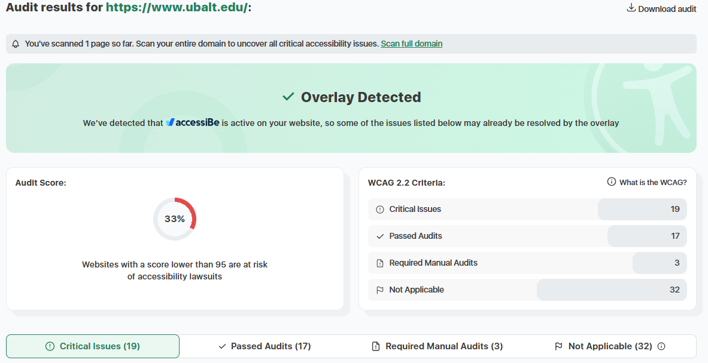

Kristian Wallace
CSIT 121
Accessibility & Best practices
University of Baltimore
The target audience's are people considering going to college, current students and staff.
The site is organized with Hierarchical Organization. The site has a main home page and a navigational menu that display's different category pages and sub cateegories.
This site uses Repitition from the CRAP Design Principle. It has repeated colors and fonts throught the site pages making the appearence cohesive.
The Audit Score is 33%. An individual with disabilities may have difficulties. A common issue was that lists did not have parent tags and missing alt text for some images.
Yes, when you go to register for events such as campus tour's you will see a pop up if you do not accurately complete the form.
I found the site to be very efficient, I was able to navigate fairly well and quickly jump to forms for registration and applications with a quick touch of a button.
Yes, it is pleasant to use for this particular industry.
Some of the subcategories are pretty deep creating a lot of choices, I believe it would be better if some were placed on the category pages themselves as opposed to overloading the navigational menu with so many subcategories